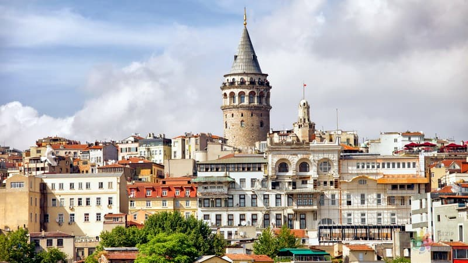

Istanbul
Sultan Ahmet Camii
1609-1617 yılları arasında Osmanlı Padişahı I. Ahmed tarafından İstanbul'daki
tarihî yarımadada,Mimar Sedefkâr Mehmed Ağa'ya yaptırılmıştır.
Cami mavi, yeşil ve beyaz renkli İznik çinileriyle bezendiği
için ve yarım kubbeleri ve büyük kubbesinin içi de
yine mavi ağırlıklı kalem işleri ile süslendiği
için Avrupalılarca "Mavi Camii (Blue Mosque)" olarak adlandırılır.
Ayasofya'nın 1935 yılında camiden müzeye dönüştürülmesiyle, İstanbul'un ana camii konumuna ulaşmıştır.

Galata Kulesi
Kule, Bizans İmparatoru Anastasius Oilosuz tarafından 528 yılında inşa ettirilmiş.
Tabii o dönemde yapı, günümüzdeki yerinden biraz uzaktaymış.
Bir fener kulesi olarak denizcilere yol göstermesi amaçlanan yapı, tarih sahnesine ilk çıktığı
dönemde tamamen ahşaptanmış.
Buna rağmen neredeyse yedi asra yakın süre boyunca ayakta kalıp görevini layıkıyla yerine getirmeyi başarmış.
